Токио · Юсима · еда
«Синсукэ» в Юсиме: старая идзакая и умение пить сакэ по-эдоски
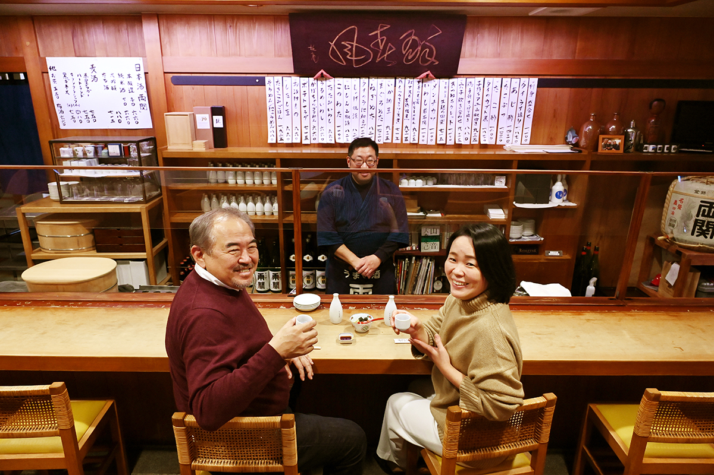
Сакэ испокон веку разгоняет мирские заботы, но пить его хочется со вкусом. В старых кварталах Токио до сих пор держится манера, унаследованная от Эдо, и лучше всего её видно в «Синсукэ», идзакае у подножия святилища Юсима Тэндзин.
За стойкой
Как пьют со вкусом
О том, что значит пить красиво, за стойкой «Синсукэ» разговаривают двое завсегдатаев. Один из них это гастрономический журналист, который съедает около 600 обедов и ужинов в год вне дома и пишет о них по всей стране. Вторая это Ханако Усуи, повар японской кухни, которая изучает старую кухню Эдо и ведёт кулинарную школу. Журналист впервые пришёл сюда, когда ему было под тридцать, а прежний хозяин был ещё молод. Ханако Усуи попала сюда в 28 лет: она работала неподалёку, и её привёл начальник.
По наблюдению журналиста, в старых идзакаях больше всего немолодых мужчин, которые приходят в одиночку. Того, кто пьёт со вкусом, видно сразу: прямая спина, правильно взятая чашечка, привычка прикрывать рот, когда пьёшь. Такой гость заказывает в такт движениям хозяина и никогда не отрывает его от дела. На столе перед ним стоит не больше двух блюд, и он не выходит за пределы своего места у стойки. Пакетик от влажной салфетки аккуратно сложен или убран в карман, бумажка от палочек свёрнута в подставку, и всё лежит на одном месте до самого ухода. Это делается не для себя, а для соседа.
«Тот, кто пьёт со вкусом, прежде всего хорошо сидит. Спина прямая, и он не тянется губами к чашечке»
гастрономический журналист
Подогрев
Горячее сакэ и рождение идзакаи
Беседа начинается с бочкового сакэ, подогретого до «нуру», чуть тёплого. Ханако Усуи обычно с первой же чашки пьёт подогретое: начинает с тёплого, а уходит на горячем. Если в питейном заведении подают сакэ, разогретое до обжигающего «тобикири-кан», это намёк: «вы уже пьяны, идите домой». В эпоху Эдо сакэ вообще пили подогретым. Подать гостю напиток комнатной температуры считалось так же невежливо, как поставить перед ним холодный рис.
Сами идзакаи появились в конце эпохи Эдо. Винная лавка была местом, куда приходили со своей бутылкой «каёи-доккури», наливали сакэ и уносили домой. Когда поспевало новое сакэ, лавка вывешивала шар из веток криптомерии и угощала покупателей. Со временем нашлись те, кто просил налить прямо на месте. «Остаться», «и-сувару», и дало заведению имя. Жёны хозяев лавок нередко были родом из провинции и подавали к сакэ деликатесы родных мест. Эти закуски становились знаменитыми, и культура идзакаи росла.
«Тот, кто пьёт со вкусом, держит один темп от первой чашки до последней. У меня так до сих пор не получается: к концу пью всё быстрее»
гастрономический журналист
Журналисту запомнился гость лет семидесяти в костюме-тройке. Он пил из своей плоской чашечки, а расплатившись, достал из нагрудного кармана белый шёлковый платок, завернул в него чашечку и ушёл. Всё это выглядело совершенно естественно. Ханако Усуи ценит в такой привычке то, что своей чашечкой никто не хвастается. Её отец, коренной эдосец из Канды, учил, что за сакэ не надо много говорить: вкус уходит через рот.
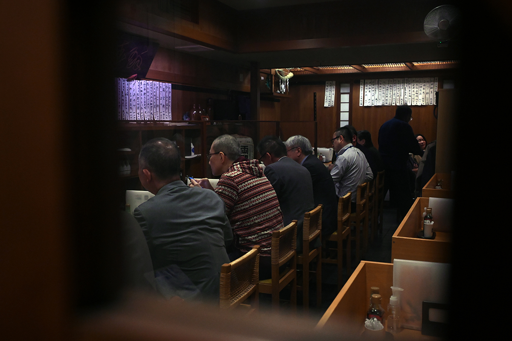
«В питейное заведение приходят незаметно и уходят незаметно. Весело выпить, вкусно поесть, а если мало, идти в следующее»
Ханако Усуи
Кухня Эдо
Местная кухня большого города
Для Ханако Усуи кухня Эдо это такая же местная кухня, как в любом уголке Японии. Классические закуски к сакэ в старом Токио: соевые бобы «ситаси-мамэ», тофу в горячей воде, «нута» с соусом из мисо, «гёдэн», рыба вроде аю под сладким мисо. Дальше идут тушёные овощи «нисимэ», икра сельди, таро, одэн, суп с моллюсками сидзими, «унохана» из соевого жмыха, зимой рыба-удильщик.
Эдо был городом ремесленников, и здесь любили плотный вкус мисо и соевого соуса. Много блюд готовят с самим сакэ: тушат в нём, вымачивают в нём, а соус «ири-дзакэ» по сути и есть сакэ. Второй приём это бульон, который отдают продукты, например суп из моллюсков хамагури. В семье Ханако Усуи на следующий день после тушёной рыбы всегда ели «унохана» на оставшемся бульоне.
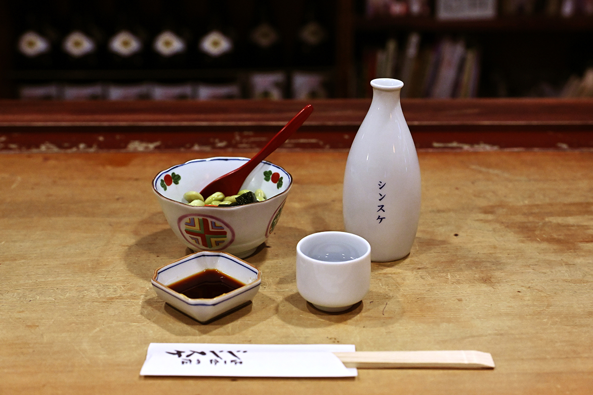
Первым в идзакаях старого Токио заказывают «ситаси-мамэ». Прообраз блюда это эдоская домашняя закуска «мисо-мамэ», но в «Синсукэ» берут не обычную сою, а зелёную из префектуры Ямагата. Район вокруг станции Уэно когда-то был воротами на северо-восток страны, и северные продукты здесь легко было достать. Зелёную сою полюбила жена второго хозяина, бабушка нынешнего, и стала готовить её дома, а четвёртый хозяин превратил её в закуску к сакэ вместе с красным конняку и желе из агар-агара с водорослями аонори.
По словам журналиста, кухня Эдо не бывает пышной. Всё точно рассчитано, но без натуги, блюдо подают с видом «ничего особенного», хочется повторить его дома, а повторить невозможно. Когда в Токио говорят, что в ресторане «видна работа», имеют в виду работу ножа: всё нарезано одинаково. В «Синсукэ», по словам Ханако Усуи, работа видна во всём, но без перебора: даже горка пряной зелени сверху не выставлена напоказ.
Заведение
Идзакая как общественная баня
«Синсукэ» открылась в 1805 году как винная лавка, а после Великого землетрясения Канто 1923 года стала идзакаей. Нынешний хозяин принял дело в 30 лет и тогда особенно ясно ощутил, что заведение стоит у самого святилища Юсима Тэндзин. У района эдоские корни, здесь родилась сцена «кодан», искусства исторических рассказов, и до сих пор чувствуется дух бывшего квартала гейш.
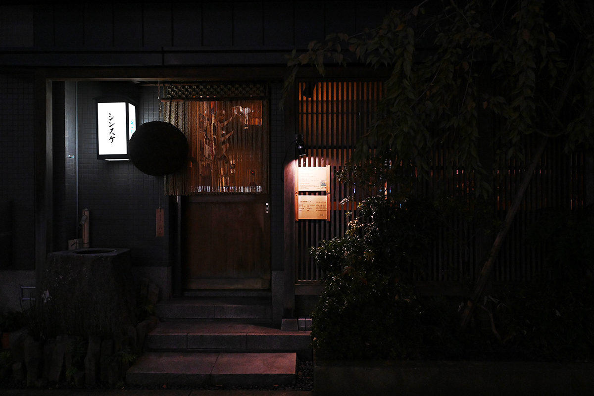
Хозяин говорит, что у него не ресторан, а идзакая, и образцом считает общественную баню сэнто. Лишнего и вычурного здесь не делают, всё держится близко к простому человеку, но при этом в полном порядке. Если сэнто между работой и домом освежает тело, то идзакая даёт отдых душе. В Юсиме много залов ракуго, дневные представления заканчиваются около половины четвёртого, и ради тех, кому после них хочется выпить, хозяин перенёс открытие на 16:00.
Сакэ здесь одно, «Рёдзэки» из префектуры Акита: связь тянется с тех времён, когда «Синсукэ» была винной лавкой. Хондзёдзо, сухое, варят специально для заведения под вкус токийцев, есть ещё чуть сладковатое дзюммай и бочковое, которое подают с октября по май. Когда подует осенний ветер, привозят бочки, и собираются любители вроде журналиста, который уверяет, что бочковое сакэ разминает душу совсем по-другому.
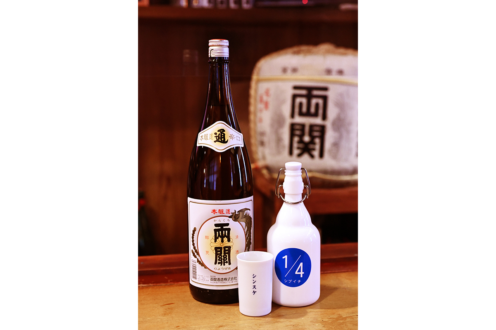
В начале эпохи Сёва (она началась в 1926 году) многие идзакаи стали обманывать с объёмом. Тогда «Синсукэ» добавила к названию слова «заведение честного го»: здесь наливают ровно один го, 180 мл. В 2023 году один го «Рёдзэки» хондзёдзо или дзюммай стоил 660 иен, полго дайгиндзё, сваренного по заказу заведения, 880 иен, один го бочкового 715 иен, средняя бутылка пива Kirin, Sapporo или Guinness 750 иен.
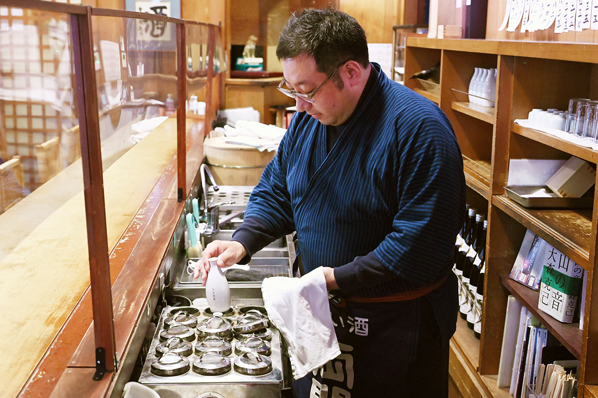
«Сибуити» на языке винных лавок означает четверть сё, большой меры объёма в 1,8 литра. Бутылку хозяин сделал, чтобы вернуть старую японскую мерку.
Закуски
Старое и новое в одной тарелке
Закуски «Синсукэ» выросли из того, что в этих местах ели всегда, но каждое блюдо доведено до нового вида. Часть меню родилась из разговоров с гостями, а иностранцев в Юсиме много. Швейцарец привёз в подарок сыр раклет, и прежний хозяин тут же завернул его в жареный тофу вместо натто: так появилась «кицунэ-раклет». Американцу не нравилась текстура тыквы, и из этого разговора родилась тыква с кунжутом.
«В "Синсукэ" что ни возьми, всё вкусно»
Ханако Усуи
На вид закуски скромные, но в каждой продуманы аромат, температура, текстура и подача. Ни одна не тянет одеяло на себя, все тихо сопровождают сакэ. Вот несколько из них, цены 2023 года.
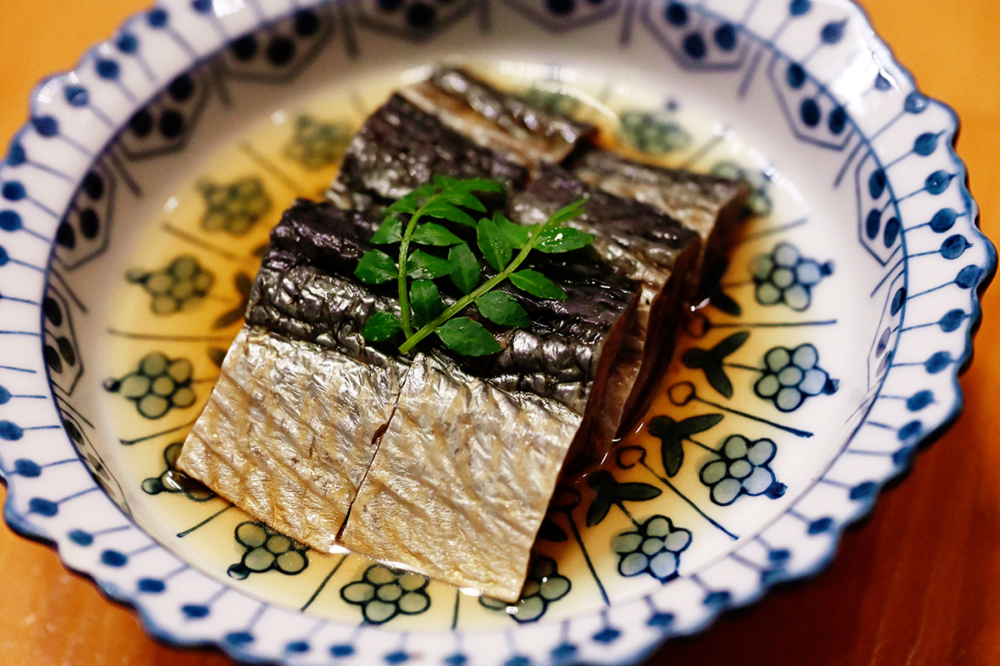
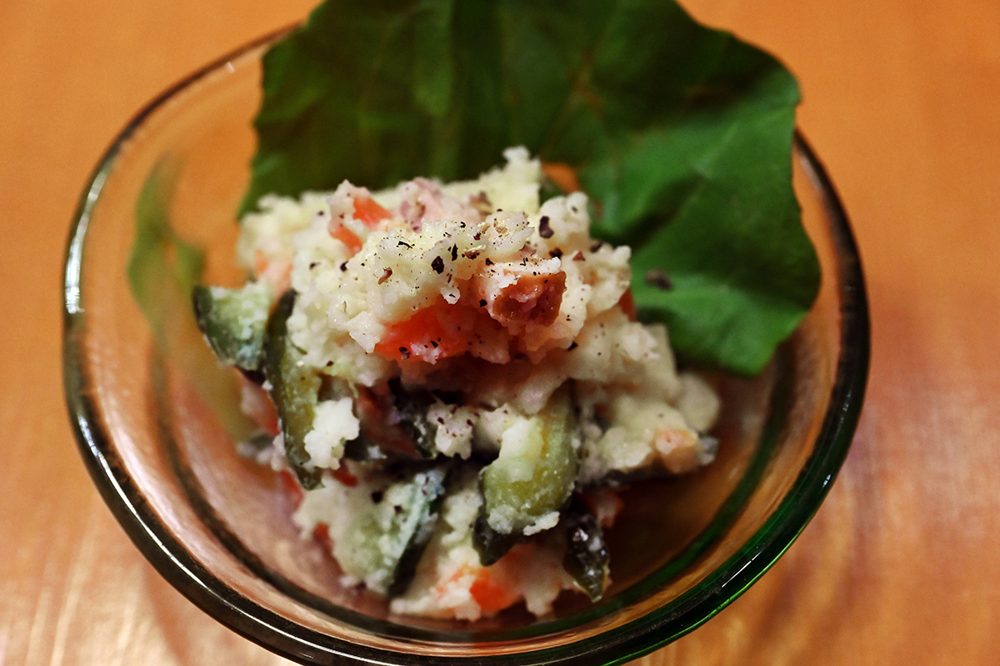
Есть и другие блюда, которые стоит попробовать. Таро сначала варят в бульоне, потом жарят во фритюре и подают с сушёной икрой карасуми и цедрой кабосу, 935 иен. Куриные потроха в вустерском соусе пришли из домашней кухни бабушки, а французская техника делает печень кремовой, 715 иен. «Нэги-нута», лук с мисо, это вкус Эдо: вместо красного мисо здесь белый, и блюдо получается легче, 825 иен. Лосось «якидзукэ» по рецепту из Мураками в префектуре Ниигата готовят при низкой температуре, кожа остаётся хрустящей, к нему подают острую пасту «кандзури», 825 иен.
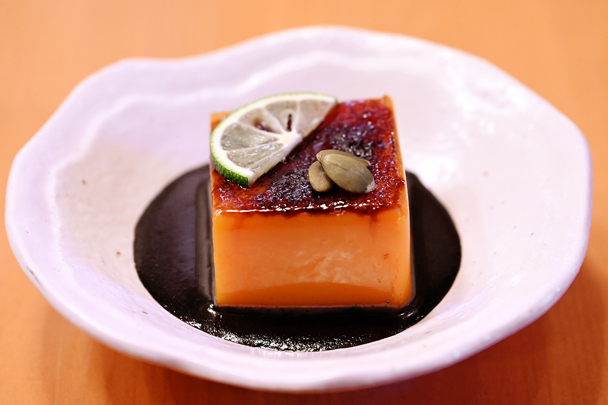
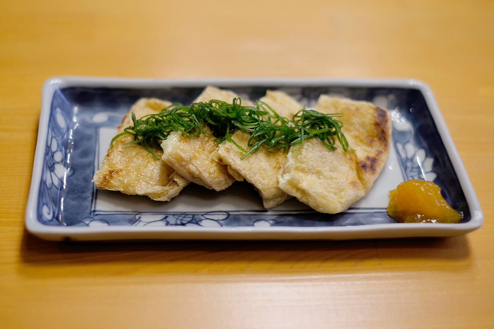
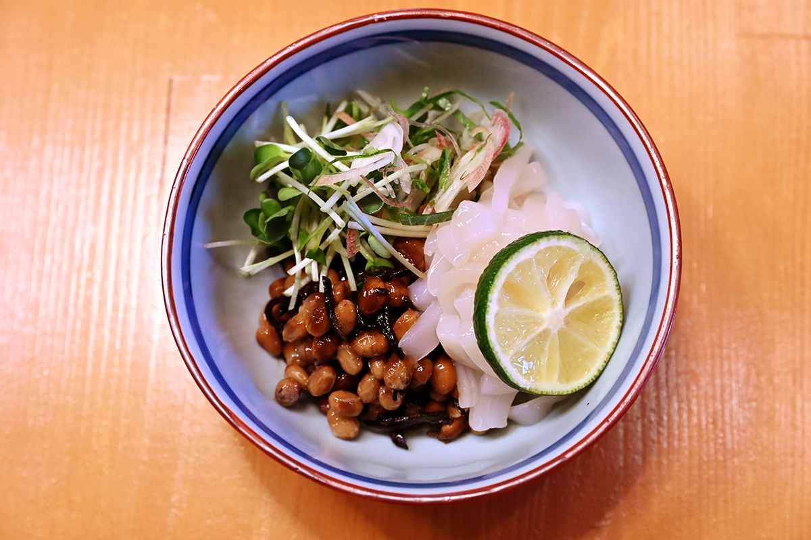
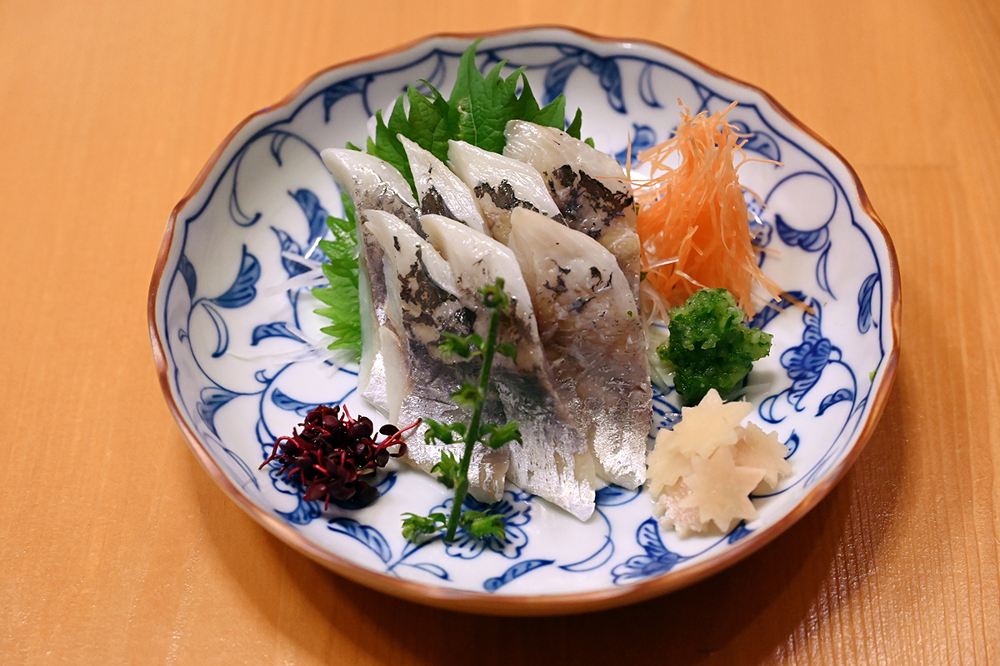
Кальмара с натто журналист называет самым красивым из всех, что ему доводилось видеть. Простые на вид тарелки держатся на долгой и аккуратной работе, и этот настрой снова и снова приводит любителей выпить к стойке «Синсукэ».
«Синсукэ»
- Адрес
- Токио, район Бункё, Юсима, 3-31-5
- Телефон
- +81 3-3832-0469
- Часы работы
- 16:00–20:30
- Выходные
- воскресенье, праздники
Фото: Кэндзи Итано.